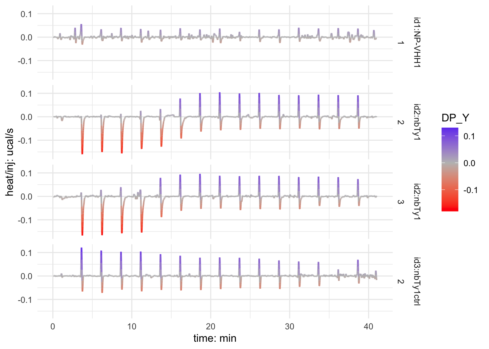

Octet and ITC data analysis of Ty1:RBD interaction
Data are associated with the manuscript An alpaca nanobody neutralizes SARS-CoV-2 by blocking receptor interaction led by my colleague Leo Hanke within the group of Gerry mcinerney. The ms just got accepted for publication in Nature Communications. The bookdown document was created based on bookdown, and rtemps.
If you find this material useful in your own research or want to re-use some of the code, please cite the main research paper.
1 Octet data analysis and visualization
1.1 Data import
Octet data were collected as described in the methods section of the associated manuscript. Data were pre-processed and analyzed using the ForteBio software. Raw and processed data were exported and imported into R using the script below. This pipeline was mainly used to tidy the data for plotting and fitting purposes. Final figures as shown in the manuscript were assembled in Adobe Illustrator.
library(ggplot2)
library(tidyverse)
library(plyr)
library(tidyr)
library(readr)
library(readxl)
library(knitr)
#library(nls)
library(nlstools)
library(nlshelper)
library(minpack.lm)
library(broom)
library(nls.multstart)
library(purrr)
#library(gnm)
#library(visreg)
#library(KRLS)
#library(glmnet)
#library(glmnetUtils)
library(magrittr)
library(forcats)
library(emmeans)
#library(modelr)
#library(cowplot)
#library(ggridges)
#library(ggrepel)
#library(ggforce)
#library(fitdistrplus)
#library(MASS)
#library(hexbin)
#library(dMod)
#library(kimisc)
library(ggsci)
library(bookdown)
library(tinytex)
library(kableExtra)
library(DT)
library(xfun)
library(rmatio)
library(reshape2)
library(latticeExtra)
library(viridisLite)
library(reticulate)
###from stackoverflow
#' @title pr_mutate_when
#' @description mutate a column within a dplyr pype only on a subset of rows
#' specified by a condition
#' Retrieved from a StackOverflow answer (https://stackoverflow.com/a/34170176/6871135)
#' @param data a `data.frame` (or `tibble` or `data.table`)
#' @param ... expression to be evaluated to filter on rows
#' @return `data frame`
#' @details DETAILS
#' @examples
#' \dontrun{
#' library(magrittr)
#' mtcars %>% mutate_when(
#' mpg > 22, list(cyl = 100),
#' disp == 160, list(cyl = 200))
#'
#' }
#' @rdname pr_mutate_when
#' @export
#' @author Kevin Ushey
pr_mutate_when <- function(data, ...) {
dots <- eval(substitute(alist(...)))
for (i in seq(1, length(dots), by = 2)) {
condition <- eval(dots[[i]], envir = data)
mutations <- eval(dots[[i + 1]], envir = data[condition, , drop = FALSE])
data[condition, names(mutations)] <- mutations
}
data
}##
###
data_overview_tib <- tribble(~rec, ~exprun_digit, ~meas_type, ~meas_driftcorr, ~meas_salt, ~filterme,
"BOTH", 501, "COMP", "ref", "norm", "11",
"nbTy1", 901, "TIT", "ref", "norm", "11",
"nbTy1", 1001, "TIT", "ref", "high", "11" )
### find all relevant files using a filename pattern.
data_dir_all <- enframe(list.dirs(path = "./data_octet", full.names = TRUE, recursive=FALSE)) %>% mutate(filterme = str_detect(value,"RBD")) %>% subset(filterme == "TRUE") %>% dplyr::select(-filterme,-name) %>% mutate(dirname=paste(value,"/",sep="")) %>% mutate(fileslist = purrr::map(dirname, ~list.files(path = ., pattern = "*.xls",recursive = FALSE))) %>% unnest() %>% mutate(sample_temp=str_extract(value,pattern="[:digit:]{6}xSAXxNBxRBDHisxCOMPx[:digit:]{4}|[:digit:]{6}xSAXxNB1AxRBDHisxTITx[:digit:]{4}")) %>% mutate(sample=str_extract(sample_temp,pattern="SAXxNBxRBDHisxCOMPx[:digit:]{4}|[:digit:]{6}xSAXxNB1AxRBDHisxTITx[:digit:]{4}")) %>% mutate(expnumber = str_extract(sample,pattern="x[:digit:]{4}")) %>% mutate(., sample_test = str_extract(sample, "NB1A|NB")) %>% mutate(., rec = case_when(sample_test == "NB" ~ "BOTH",sample_test == "NB1A" ~ "nbTy1", TRUE ~ "STH")) %>% mutate(., exprun = str_extract(expnumber, pattern = "[:digit:]{4}")) %>% mutate(., exprun_digit = as.numeric(exprun)) %>% dplyr::select(-sample_temp, -exprun) %>% left_join(., data_overview_tib)
#
### filter sensor titration data
data_dir_sensors <- data_dir_all %>% mutate(fileslist_filtered = str_detect(fileslist,pattern="^[:alnum:][:digit:]{1,2}.xls")) %>% subset(fileslist_filtered == "TRUE") %>% unite(.,"readme", c("dirname", "fileslist"),sep="") %>% dplyr::select(-fileslist_filtered,-value, -expnumber, -sample_test) %>% mutate(sensorid=str_extract(readme,pattern="[A-H][:digit:]{1,2}.xls")) %>% mutate(sensorid=str_extract(sensorid,pattern="[A-H][:digit:]{1,2}")) %>%
mutate(sensor=str_extract(sensorid,pattern="[A-H]")) %>% unite(., col = "sampleid", c("sample", "sensorid"), sep = "_", remove = FALSE) %>% dplyr::select(., readme, sampleid, rec, exprun_digit, meas_type, sensorid, sensor)
report_colname_list <- tribble(~report_type, ~repres_colnames, ~repres_range, ~repres_sheet, ~senstray_colnames, ~senstray_range, ~senstray_sheet,
"11", c("selected", "include", "index", "color", "sensor_loc", "sensor_type", "sensor_info", "replicate_group", "baseline_loc", "assoc_sample", "sample_id", "diss_loc", "load_well", "load_sample", "cycle", "conc", "response", "KD_M", "kon_Ms_inv","km_err","kdis_s_inv","kdir_err","Rmax","kobs_s_inv","kobs_err","Req","Req_err","Req_Rmax_fr","ass_X2","ass_R2","SSG_kd","SSG_Rmax","SSG_R2"), "A2:AG9", "Result Table", c("step_id", "step_name", "step_type", "step_time"), "A22:D35", "Sensor Tray",
"21", c("selected", "include", "index", "color", "sensor_loc", "sensor_type", "sensor_info", "replicate_group", "baseline_loc", "assoc_sample", "sample_id", "diss_loc", "load_well", "load_sample", "cycle", "conc", "response", "KD2_M", "KD_err","KD2_err","kon_Ms_inv","km","kon2","kon_err","km_err","kon2_err","kdis_s_inv","kdis2","kdis_err","kdis2_err","Rmax","Rmax2","Rmax2_err","kobs_s_inv", "kobs2", "kobs_err", "kobs2_err", "Req", "Req2", "Req_err", "Req2_err","Req_Rmax_fr", "Req2_Rmax_fr", "ass_X2","ass_R2","SSG_kd","SSG_Rmax","SSG_R2","KD_perc", "KD2_perc"),"A2:AX9","Result Table", c("step_id", "step_name", "step_type", "step_time"),"A22:D35", "Sensor Tray")
### filter sensor parameters (sensors, ligand, concentration): IMPORTANT: modify the results page of the xls report file; and save as tab del file (txt format); then rename to xls
data_dir_all_pars <- data_dir_all %>% mutate(fileslist_filtered = str_detect(fileslist,pattern="^[:alnum:][:digit:]{1,2}.xls")) %>% dplyr::filter(fileslist_filtered=="FALSE") %>% mutate(filtername = str_detect(fileslist,"ExcelReport")) %>% subset(filtername == "TRUE") %>% dplyr::select(-fileslist_filtered,-filtername) %>% unite(.,"readme", c("dirname", "fileslist"),sep="") %>% dplyr::select(-value) %>% dplyr::mutate(., report_name = str_extract(readme, "ExcelReport_kd[:digit:][:digit:]")) %>% dplyr::mutate(., report_type = str_extract(report_name, "[:digit:][:digit:]")) %>% left_join(., report_colname_list) %>% mutate(parameters = purrr::pmap(list(readme, repres_sheet, repres_range, repres_colnames), read_xls)) %>% mutate(senstray = purrr::pmap(list(readme, senstray_sheet, senstray_range, senstray_colnames), read_xls)) %>% mutate(parameters_sel = purrr::map(parameters, ~dplyr::select(.,sensorid=sensor_loc,ligand = sample_id, conc_nM = conc)))
data_dir_all_selpars <- data_dir_all_pars %>% dplyr::filter(., report_type == filterme) %>% dplyr::select(sample, parameters_sel, contains("meas")) %>% unnest(., cols = c("parameters_sel")) %>% unite(., col = "sampleid", c("sample", "sensorid"), sep = "_", remove = FALSE)
data_dir_all_sensors_pars <- data_dir_sensors %>% group_by(., sampleid, readme, rec, exprun_digit, meas_type, sensorid, sensor) %>% dplyr::summarize() %>% right_join(., data_dir_all_selpars)
data_dir_all_pars_mod <- data_dir_all_pars %>% mutate(., senstray_acc = purrr::map(senstray, ~dplyr::mutate(., step_time_acc = purrr::map_dbl(seq_along(step_time), ~sum(step_time[1:.x])) )))
###combine parameters with sensor data
data_dir_all_csv <- data_dir_all_sensors_pars %>% drop_na(., readme) %>% mutate(csv = purrr::map(readme,~read_tsv(.,skip=5, col_names = c("time","octet","simulated"))) )
data_dir_all_csv_titrations <- data_dir_all_csv %>% ungroup() %>% dplyr::select(-readme) %>% mutate(csv_shifted = purrr::map(csv,~dplyr::mutate(.,time_shifted = time - min(time)))) %>% dplyr::select(-csv)1.2 Initial plot of the titration data as a preview
data_dir_all_csv_titrations_forteplot <- data_dir_all_csv_titrations %>% dplyr::filter(meas_type == "TIT") %>% unnest(., cols = c("csv_shifted")) %>% ggplot(data=., aes(x=time_shifted, y=octet, colour=conc_nM, group = sampleid)) +
#ylab("Abs /mAU") +#xlim(c(0,1000)) +#ylim(c(-5,50)) + #geom_vline(xintercept = mwlines, color = "red", linetype="dashed", size=0.5) +
#geom_point(size = 2, stroke = 0.1, alpha=0.2, colour = "black") +
geom_line(size=0.5) +
scale_x_continuous("time: s", breaks = c(0, 900, 1800, 2700, 3600, 4300)) +
scale_y_continuous("octet: nm") +
scale_colour_gradient2(low="green", mid = "blue", high="red", midpoint = 10 ,space ="Lab", trans = "log2") + #,
facet_grid(exprun_digit ~ ., scales = "free_y") +
#facet_grid_paginate(index ~ rec, ncol=2, nrow=4, page = i) +
theme_light()
print(data_dir_all_csv_titrations_forteplot)#ggsave(file="ggplot_ligand_ligand_temp.jpeg", plot=data_dir_all_csv_titrations_plot,device="jpeg")
ggsave(file="./ggplot_ligand_ligand_forte.jpeg", device="jpeg", width = 120, height = 120, units = c("mm"))
#ggsave(file="./ggplot_ligand_ligand.ps", width = 120, height = 110, units = c("mm"))Initial plot of the two titrations at low (experiment 901) and high (experiment 1001) salt concentrations, respectively.
1.3 Initial pseudo-equilibrium plot to preview the extracted data
Pseudo-equilibrium octet values were first extraced …
data_pall_csv_conc_titrations_eq <- data_dir_all_csv_titrations %>% mutate(csv_shifted_eqphase = purrr::map(csv_shifted, ~filter(.,time_shifted > 1750 & time_shifted < 1800))) %>% mutate(csv_shifted_eqvalue = purrr::map(csv_shifted_eqphase, ~summarize(.,octet_eq = mean(octet)))) %>% unnest(., c("csv_shifted_eqvalue"))
data_pall_csv_conc_titrations_eq_leftjoin <- data_pall_csv_conc_titrations_eq %>% dplyr::select(., sampleid, conc_nM, octet_eq)
data_dir_all_csv_titrations_unnested <- data_dir_all_csv_titrations %>% left_join(., data_pall_csv_conc_titrations_eq_leftjoin) %>% unnest(cols = c("csv_shifted")) %>% group_by(., rec, meas_type) %>% group_modify(., ~mutate(.,index=group_indices(.,exprun_digit))) %>% ungroup()
### plot eq values against concentration: 1200s association
data_dir_all_csv_titrations_all_nested <- data_dir_all_csv_titrations_unnested %>% dplyr::filter(.,meas_type == "TIT") %>% group_by(., rec, meas_type, sampleid, exprun_digit, sensorid, sensor, sample, ligand, conc_nM, octet_eq, index) %>% nest(.)
data_pall_csv_conc_titrations_ligand_eq <- data_pall_csv_conc_titrations_eq %>% dplyr::filter(meas_type == "TIT") and then plotted against the NTF2-dimer concentration.
data_pall_csv_conc_titrations_ligand_eq_logplot <- data_pall_csv_conc_titrations_ligand_eq %>% ggplot(data=., aes(x=conc_nM, y=octet_eq, color=conc_nM, group=factor(sampleid))) + #xlab("Vol /mL") + #ylab("Abs /mAU") +#xlim(c(0,1000)) +#ylim(c(-5,50)) + #geom_vline(xintercept = mwlines, color = "red", linetype="dashed", size=0.5) +
geom_point(size=2) +
scale_x_log10("c(RBD): nM") +
scale_y_continuous("pseudo-eq octet: nm") +
scale_color_gradient2("c(RBD): nM", low="green", mid="blue", high="red", space ="Lab",midpoint=3, trans = "log2") + #,
facet_grid(sample ~ ., scales = "free_y") +
theme_light()
print(data_pall_csv_conc_titrations_ligand_eq_logplot)ggsave(file="ggplot_ligand_titrations_eqconc_log.jpeg", plot=data_pall_csv_conc_titrations_ligand_eq_logplot,device="jpeg")
#ggsave(file="ggplot_ligand_titrations_eqconc_log.ps", plot=data_pall_csv_conc_titrations_ligand_eq_logplot,device="ps")Pseudo-equilibrium data versus ligand concentration on semi-log scale, without any fits.
1.4 Raw data plots to compare ligands and sensor surfaces
Before continuing with data fitting and further analysis, raw data are plotted in panels for all experiments. Plots saved as JPGs, only shown for the comparative experiment, not for the titrations.
### filter sensor titration data
data_dir_sensors_raw <- data_dir_all %>% dplyr::filter(., fileslist == "RawData0.xls") %>% unite(.,"readme", c("dirname", "fileslist"),sep="") %>% dplyr::select(-expnumber)
sensor_spec <- tribble(~.name, ~.value, ~sensor, ~ligand, ~analyte, ~meas_type, ~meas_driftcorr,
"A_time", "time", "A", "nbTy1", "RBD", "TIT", "none",
"A_octet", "octet", "A","nbTy1","RBD", "TIT", "none",
"B_time", "time", "B", "nbTy1","RBD","TIT", "none",
"B_octet", "octet", "B","nbTy1","RBD", "TIT", "none",
"C_time", "time", "C", "nbTy1","RBD","TIT", "none",
"C_octet", "octet", "C","nbTy1","RBD", "TIT", "none",
"D_time", "time", "D", "nbTy1","RBD","TIT", "none",
"D_octet", "octet", "D","nbTy1","RBD", "TIT", "none",
"E_time", "time", "E", "nbTy1","RBD","TIT", "none",
"E_octet", "octet", "E","nbTy1","RBD", "TIT", "none",
"F_time", "time", "F", "nbTy1","RBD","TIT", "none",
"F_octet", "octet", "F","nbTy1","RBD", "TIT", "none",
"G_time", "time", "G", "nbTy1","RBD","TIT", "none",
"G_octet", "octet", "G","nbTy1","RBD", "TIT", "none",
"H_time", "time", "H", "nbTy1","RBD","TIT", "none",
"H_octet", "octet", "H","nbTy1","RBD", "TIT", "none",
"A_time", "time", "A", "nbTy1","RBD","TIT", "ref",
"A_octet", "octet", "A","nbTy1","RBD", "TIT", "ref",
"B_time", "time", "B", "nbTy1","RBD","TIT", "ref",
"B_octet", "octet", "B","nbTy1","RBD", "TIT", "ref",
"C_time", "time", "C", "nbTy1","RBD","TIT", "ref",
"C_octet", "octet", "C","nbTy1","RBD", "TIT", "ref",
"D_time", "time", "D", "nbTy1","RBD","TIT", "ref",
"D_octet", "octet", "D","nbTy1","RBD", "TIT", "ref",
"E_time", "time", "E", "nbTy1","RBD","TIT", "ref",
"E_octet", "octet", "E","nbTy1","RBD", "TIT", "ref",
"F_time", "time", "F", "nbTy1","RBD","TIT", "ref",
"F_octet", "octet", "F","nbTy1","RBD", "TIT", "ref",
"G_time", "time", "G", "nbTy1","RBD","TIT", "ref",
"G_octet", "octet", "G","nbTy1","RBD", "TIT", "ref",
"H_time", "time", "H", "nbTy1","PBST","TIT", "ref",
"H_octet", "octet", "H","nbTy1","PBST", "TIT", "ref",
"A_time", "time", "A", "nbTy1","RBD","COMP", "ref",
"A_octet", "octet", "A","nbTy1","RBD", "COMP", "ref",
"B_time", "time", "B", "nbTy1","RBD","COMP", "ref",
"B_octet", "octet", "B","nbTy1","RBD", "COMP", "ref",
"C_time", "time", "C", "nbTy1","PBST","COMP", "ref",
"C_octet", "octet", "C", "nbTy1","PBST","COMP", "ref",
"D_time", "time", "D", "SAX","RBD","COMP", "ref",
"D_octet", "octet", "D", "SAX","RBD","COMP", "ref",
"E_time", "time", "E","NP-VHH1","RBD","COMP", "ref",
"E_octet", "octet", "E", "NP-VHH1","RBD","COMP", "ref",
"F_time", "time", "F", "NP-VHH1","RBD","COMP", "ref",
"F_octet", "octet", "F", "NP-VHH1","RBD","COMP", "ref",
"G_time", "time", "G", "NP-VHH1","PBST","COMP", "ref",
"G_octet", "octet", "G", "NP-VHH1","PBST","COMP", "ref",
"H_time", "time", "H", "SAX","RBD","COMP", "ref",
"H_octet", "octet", "H", "SAX","RBD","COMP", "ref")
sensor_spec_nested <- sensor_spec %>% group_by(., meas_type, meas_driftcorr) %>% nest() %>% dplyr::select(., meas_type, meas_driftcorr, sensor_par = data)
sensor_plot_f <- function(df){
plot_obj <- ggplot(data=df, aes(x=time, y=octet, color=sensor)) +
#xlab("Vol /mL") + #ylab("Abs /mAU") +#xlim(c(0,1000)) +#ylim(c(-5,50)) + #geom_vline(xintercept = mwlines, color = "red", linetype="dashed", size=0.5) +
geom_line(size=1) +
scale_x_continuous("time: s") +
scale_y_continuous("octet: nm") +
theme_light() +
scale_color_aaas() +
#scale_color_gradient2(low="green", mid="blue", high="red", space ="Lab",midpoint=3, trans = "log10") + #,
facet_grid(ligand ~ analyte)
return(plot_obj)
}
### plot raw data
data_dir_sensors_raw_xls <- data_dir_sensors_raw %>% mutate(csv = purrr::map(readme,~read_tsv(., skip = 1, col_names = c("A_time", "A_octet", "B_time", "B_octet", "C_time", "C_octet", "D_time", "D_octet", "E_time", "E_octet", "F_time", "F_octet", "G_time", "G_octet","H_time", "H_octet"))) ) %>% left_join(., sensor_spec_nested)
data_dir_sensors_raw_xls_longer <- data_dir_sensors_raw_xls %>% mutate(xls_longer = purrr::pmap(list(csv, sensor_par), pivot_longer_spec)) %>% mutate(xls_longer_sorted = purrr::map(xls_longer,~arrange(., sensor))) %>% dplyr::mutate(., sensor_plot = purrr::pmap(list(xls_longer_sorted),sensor_plot_f)) %>% dplyr::mutate(., plot_name = paste("rawdata_", sample, ".jpeg", sep =""))
pwalk(list(data_dir_sensors_raw_xls_longer$plot_name, data_dir_sensors_raw_xls_longer$sensor_plot), ggsave)data_dir_sensors_raw_xls_longer_comp <- data_dir_sensors_raw_xls_longer %>% dplyr::select(., c(1:10), xls_longer_sorted) %>% dplyr::filter(., rec == "BOTH") %>% unnest(., xls_longer_sorted) %>% dplyr::mutate(., plotgroup = paste(ligand, analyte, sep = " & "))
sample_list_colororder <- data_dir_sensors_raw_xls_longer_comp %>% group_by(., exprun_digit, sample, sensor, ligand, analyte, plotgroup) %>% dplyr::summarize(., min_time = min(time)) %>% dplyr::mutate(., plotid = paste(sample, sensor, sep = "x")) %>% ungroup()
data_dir_sensors_raw_xls_longer_comp_plot <- data_dir_sensors_raw_xls_longer_comp %>% ggplot(., aes(x=time, y=octet, color=plotgroup)) +
#xlab("Vol /mL") + #ylab("Abs /mAU") +#xlim(c(0,1000)) +#ylim(c(-5,50)) + #geom_vline(xintercept = mwlines, color = "red", linetype="dashed", size=0.5) +
geom_line(size=1) +
scale_x_continuous("time: s", n.breaks = 10) +
scale_y_continuous("octet: nm") +
theme_light() +
scale_color_aaas()
#scale_color_gradient2(low="green", mid="blue", high="red", space ="Lab",midpoint=3, trans = "log10") + #,
#facet_grid(. ~ .)
print(data_dir_sensors_raw_xls_longer_comp_plot) ggsave("comparative_plot.jpeg", plot = data_dir_sensors_raw_xls_longer_comp_plot, width = 160, height = 80, units = c("mm"))
ggsave("comparative_plot.ps", plot = data_dir_sensors_raw_xls_longer_comp_plot, width = 160, height = 80, units = c("mm"))This figure was used in an earlier manuscript version, following caption just copied froma that earlier version: RBD bounds to surface-immobilized nbTy1 (red curves), but not to NP-VH11 (violet curves) or to biocytin-quenched Streptavidin (SAX, green curves). Almost equal nanobody immobilization levels of about 0.7 nm were obtained by first loading nbTy1 and then NP-VH11. The SAX control surface (green) was only quenched, but not loaded with nanobodies. During association, nanobody sample and control SAX sensors (red, violet and green) were dipped into RBD, while the reference nanobody sensors were dipped into PBST (blue and light-green). For dissociation, all sensors were dipped into PBST. Binding of molecules over time is recorded as sensorgrams recording the shift in wavelengths (unit: nm) due to an increase in the optical thickness of the surface layer.
sample_list_colororder_add <- sample_list_colororder
data_dir_all_csv_comp_forteplot <- data_dir_all_csv_titrations %>% dplyr::filter(meas_type == "COMP") %>% dplyr::mutate(., nanobody = case_when(sensorid == "A5" ~ "nbTy1", sensorid == "B5" ~"nbTy1", sensorid == "E5" ~"NP-VHH1", sensorid == "F5" ~"NP-VHH1") ) %>% dplyr::mutate(., plotgroup = paste(nanobody, " & RBD", sep = "")) %>% dplyr::mutate(., sensor = str_extract(sensorid, pattern = "[ABCDEFGH]")) %>% dplyr::mutate(., plotid = paste(sample, sensor, sep = "x")) %>% dplyr::mutate(., plotorder = case_when(nanobody == "nbTy1" ~ "id2:nbTy1", nanobody == "NP-VHH1" ~ "id1:NP-VHH1", TRUE ~ "none")) %>% unnest(., cols = c("csv_shifted")) %>% ggplot(data=., aes(x=time_shifted, y=octet, colour=plotorder, group = plotid)) +
#ylab("Abs /mAU") +#xlim(c(0,1000)) +#ylim(c(-5,50)) + #geom_vline(xintercept = mwlines, color = "red", linetype="dashed", size=0.5) +
#geom_point(size = 2, stroke = 0.1, alpha=0.2, colour = "black") +
geom_line(size=0.5) +
scale_x_continuous("time: min", breaks = c(0, 900, 1800, 2700, 3600), labels = function(breaks) breaks/60) +
scale_y_continuous("octet: nm", limits = c(-0.1,2)) +
#scale_colour_gradient2(low="green", mid = "blue", high="red", midpoint = 10 ,space ="Lab", trans = "log2") + #,
#facet_grid(exprun_digit ~ .) +
scale_color_aaas() +
#facet_grid_paginate(index ~ rec, ncol=2, nrow=4, page = i) +
theme_light()
print(data_dir_all_csv_comp_forteplot)#ggsave(file="ggplot_ligand_ligand_temp.jpeg", plot=data_dir_all_csv_titrations_plot,device="jpeg")
ggsave(file="./ggplot_ligand_ligand_fortecomp.jpeg", device="jpeg", width = 120, height = 40, units = c("mm"))
#ggsave(file="./ggplot_ligand_ligand.ps", width = 120, height = 110, units = c("mm"))Plot used for Figure 3A in ms. see figure legend in ms for more details.
1.5 Analysis and plotting of sensor ligand loads
#define report points for sensor loads
data_dir_all_pars_mod_sample_loadids <- data_dir_all_pars_mod %>% dplyr::select(sample, meas_type) %>% group_by(sample, meas_type) %>% dplyr::summarize() %>% dplyr::mutate(., load_id1 = case_when(meas_type == "TIT" ~ 1, meas_type == "COMP" ~ 1, TRUE ~ 0), load_id2 = case_when(meas_type == "TIT" ~ 4, meas_type == "COMP" ~ 3, TRUE ~ 0), load_id3 = case_when(meas_type == "TIT" ~ 1, meas_type == "COMP" ~ 3, TRUE ~ 0), load_id4 = case_when(meas_type == "TIT" ~ 4, meas_type == "COMP" ~ 6, TRUE ~ 0))
pull_id_times_f <- function(senstray_acc, load_id){
time <- senstray_acc %>% dplyr::filter(., step_id == load_id) %>% dplyr::select(., step_time_acc) %>% pull()
return(time)
}
data_dir_all_pars_mod_join <- data_dir_all_pars_mod %>% dplyr::filter(., filterme == report_type) %>% dplyr::select(., sample, meas_type, senstray_acc) %>% left_join(., data_dir_all_pars_mod_sample_loadids) %>% dplyr::mutate(., id1_time = purrr::pmap(list(senstray_acc, load_id1), pull_id_times_f),id2_time = purrr::pmap(list(senstray_acc, load_id2), pull_id_times_f), id3_time = purrr::pmap(list(senstray_acc, load_id3), pull_id_times_f), id4_time = purrr::pmap(list(senstray_acc, load_id4), pull_id_times_f) ) %>% unchop(., cols = c("id1_time", "id2_time", "id3_time", "id4_time")) %>% dplyr::select(., sample, meas_type, contains("_time"))
#extract sensorloads at the defined timepoints
sensor_load_pull_f <- function(df, id_time){
df_value <- df %>% dplyr::filter(., time > (id_time-5) & time < (id_time+0.1)) %>% dplyr::group_by(., sensor) %>% dplyr::summarize(., octet_level = mean(octet))
return(df_value)
}
data_dir_sensors_raw_xls_longer_sensorloads <- data_dir_sensors_raw_xls_longer %>% dplyr::select(., -csv, -sensor_par, -sensor_plot, -plot_name, -xls_longer) %>% left_join(., data_dir_all_pars_mod_join) %>% dplyr::mutate(level_id1 = purrr::pmap(list(xls_longer_sorted, id1_time), sensor_load_pull_f),level_id2 = purrr::pmap(list(xls_longer_sorted, id2_time), sensor_load_pull_f),level_id3 = purrr::pmap(list(xls_longer_sorted, id3_time), sensor_load_pull_f), level_id4 = purrr::pmap(list(xls_longer_sorted, id4_time), sensor_load_pull_f))
combine_level_ids_f <- function(df1, df2, df3, df4){
df_combined <- df1 %>% left_join(., df2) %>% left_join(., df3) %>% left_join(., df4)
return(df_combined)
}
data_dir_sensors_raw_xls_longer_sensorloads_unnested <- data_dir_sensors_raw_xls_longer_sensorloads %>% dplyr::select(sample, rec, exprun_digit, meas_type, meas_driftcorr, meas_salt, contains("level")) %>% dplyr::mutate(level_id1_rn = purrr::map(level_id1, ~dplyr::select(., sensor, level_id1 = octet_level)), level_id2_rn = purrr::map(level_id2, ~dplyr::select(., sensor, level_id2 = octet_level)), level_id3_rn = purrr::map(level_id3, ~dplyr::select(., sensor, level_id3 = octet_level)), level_id4_rn = purrr::map(level_id4, ~dplyr::select(., sensor, level_id4 = octet_level)) ) %>% dplyr::select(., -c("level_id1","level_id2","level_id3","level_id4")) %>% dplyr::mutate(level_ids = purrr::pmap(list(level_id1_rn, level_id2_rn, level_id3_rn, level_id4_rn), combine_level_ids_f)) %>% dplyr::mutate(level_ids_diff = purrr::map(level_ids, ~dplyr::mutate(., diff_id1 = level_id2 - level_id1, diff_id3 = level_id4 - level_id3) )) %>% dplyr::select(., sample, rec, exprun_digit, meas_type, contains("meas_"), level_ids_diff) %>% unnest(., c("level_ids_diff")) %>% dplyr::mutate(., plotname = "sensors")data_dir_sensorloads_sel_plot <- data_dir_sensors_raw_xls_longer_sensorloads_unnested %>% dplyr::filter(meas_type == "TIT" & exprun_digit > 802) %>% ggplot(., aes(x = plotname, y = diff_id1)) +
geom_boxplot(position = "identity", outlier.shape = NA) +
geom_jitter(stat = "identity", width = 0.1) +
facet_grid(exprun_digit ~ ., scales = "free_y") +
scale_color_aaas() +
scale_y_continuous(name = NULL, limits = c(0, 0.5)) +
theme_light()
print(data_dir_sensorloads_sel_plot)Sensor Loads of titration experiments. Used for Figures 3B and supplemental Figure 2A. see figure legend in ms for more details.
sensor_spec_nested_comp <- sensor_spec_nested %>% dplyr::filter(., meas_type == "COMP") %>% unnest(sensor_par) %>% group_by(., meas_type, meas_driftcorr, sensor, ligand, analyte) %>% dplyr::summarize() %>% ungroup() %>% dplyr::select(sensor, ligand, analyte)
data_dir_sensors_raw_xls_longer_sensorloads_unnested_comp <- data_dir_sensors_raw_xls_longer_sensorloads_unnested %>% dplyr::filter(., meas_type == "COMP") %>% dplyr::select(., c(sample, rec, exprun_digit, sensor, diff_id1, diff_id3)) %>% left_join(., sensor_spec_nested_comp) %>% dplyr::mutate(., sensorgroup = case_when(sensor == "A" ~ "AD", sensor == "B" ~ "AD", sensor == "C" ~ "AD", sensor == "D" ~ "AD",sensor == "E" ~ "EH", sensor == "F" ~ "EH", sensor == "G" ~ "EH", sensor == "H" ~ "EH")) %>% dplyr::mutate(., diff_id = case_when(sensorgroup == "AD" ~ diff_id1, sensorgroup == "EH" ~ diff_id3, TRUE ~ 0))
data_dir_sensorloads_comp_plot <- data_dir_sensors_raw_xls_longer_sensorloads_unnested_comp %>% dplyr::mutate(., plotorder = case_when(ligand == "nbTy1" ~ "id2:nbTy1", ligand == "NP-VHH1" ~ "id1:NP-VHH1", ligand == "SAX" ~ "id3: SAX", TRUE ~ "none")) %>% dplyr::filter(., ligand != "SAX") %>% ggplot(., aes(x = ligand, y = diff_id)) +
geom_boxplot(position = "identity", outlier.shape = NA) +
geom_jitter(aes(colour = plotorder), stat = "identity", width = 0.1) +
facet_grid(. ~ ., scales = "free_y") +
scale_color_aaas() +
scale_x_discrete() +
scale_y_continuous(name = NULL, labels = NULL, limits = c(-0.1,2)) +
theme_light()
print(data_dir_sensorloads_comp_plot)Sensor Loads of comparative experiments. Used for Figure 3A. see ms figure legend in ms for more details.
1.6 Fitting and plotting pseudo-equilibrium data
Pseudo-eq binding data were fit using the Hill equation, taken from (Gadagkar and Call 2015):
\[\begin{equation} octet_{eq} = octet_0 + \frac{octet_{max} - octet_0}{1+[\frac{EC50}{conc}]^{hslope} } \tag{1.1} \end{equation}\]
and a simple Langmuir isotherm, eq taken from (O’Shannessy and Winzor 1996)
\[\begin{equation} octet_{eq} = \frac{octet_{max}*conc}{Kd + conc} \tag{1.2} \end{equation}\]
with \(octet_{eq}\) as pseude-equilibrium values, \(octet_0\) as response at zero analyte concentration, \(EC50\) and \(Kd\) as half-maximum response and affinity, respectively, \(conc\) as analyte concentration, and \(hslope\) as the hill slope.
Data fitting chunk:
# Hill-fit https://doi.org/10.1016/j.vascn.2014.08.006
# Myszka (1996) Analytical BIochemistry: Equilibrium Analysis of High Affinity Interactions Using BIACORE
# O’Shannessy, D J, and D J Winzor. 1996. “Interpretation of Deviations from Pseudo-First-Order Kinetic Behavior in the Characterization of Ligand Binding by Biosensor Technology.” Analytical Biochemistry 236 (2): 275–83. https://doi.org/10.1006/abio.1996.0167.
norm_purrr_f <- function(df){
octet_max <- 0.7 #max(octet_eq)
df_norm <- df %>% mutate(., octet_norm = ((octet_eq-min(octet_eq))/(octet_max-min(octet_eq))), conc_nM_dimer = conc_nM/2)
return(df_norm)
}
nlsLM_KD_f <- function(data, Rstart, Rminlim, Rmaxlim){
fit_obj <- nlsLM(octet_eq ~ (R*conc_nM/(KD_eq+conc_nM)), start = list(R=Rstart,KD_eq=10), lower=c(Rminlim,1), upper=c(Rmaxlim,Inf), data=data, weights = (1/octet_eq))
return(fit_obj)
}
nlsLM_Hill_f <- function(data, Rstart, Rminlim, Rmaxlim){
fit_obj <- nlsLM(octet_eq ~ (octet_zero+(octet_max-octet_zero)/(1+(EC50/conc_nM)^hslope ) ), start = list(octet_max=Rstart, octet_zero=0, EC50=10,hslope=1), lower=c(Rminlim, 0, 1, 0.3), upper=c(Rmaxlim, 0, 100, 1.5), data=data, weights = (1/octet_eq))
return(fit_obj)
}
data_pall_csv_conc_titrations_ligand_eq_fit <- data_pall_csv_conc_titrations_ligand_eq %>% dplyr::select(-csv_shifted, -csv_shifted_eqphase) %>% group_by(exprun_digit) %>% group_modify(., ~mutate(.,Rstart=max(octet_eq))) %>% group_modify(., ~mutate(.,Rmaxlim=Rstart+0.2*Rstart, Rminlim=Rstart-0.2*Rstart )) %>% ungroup() %>% group_by(exprun_digit, rec, meas_type, sample, ligand, meas_driftcorr, meas_salt, Rstart, Rmaxlim, Rminlim) %>% nest() %>% mutate(eq_KD_fit = purrr::pmap(list(data, Rstart, Rminlim, Rmaxlim), nlsLM_KD_f)) %>% mutate(KD_results = map(eq_KD_fit, augment)) %>% mutate(eq_Hill_fit = purrr::pmap(list(data, Rstart, Rminlim, Rmaxlim), nlsLM_Hill_f)) %>% mutate(hill_results = map(eq_Hill_fit, augment)) %>% mutate(kd_results = map(eq_KD_fit, augment)) %>% mutate(kd_pars = map(eq_KD_fit, tidy)) %>% mutate(hill_pars = map(eq_Hill_fit, tidy)) %>% mutate(hill_results_mod = purrr::map(hill_results, ~dplyr::select(., octet_eq, conc_nM, hill_fit = ".fitted"))) %>% mutate(kd_results_mod = purrr::map(kd_results, ~dplyr::select(., octet_eq, conc_nM, kd_fit = ".fitted")))
### write fit parameters as csv files
data_pall_csv_conc_titrations_ligand_eq_fit_pars_table <- data_pall_csv_conc_titrations_ligand_eq_fit %>% mutate(., hill_pars_long = purrr::map(hill_pars, ~pivot_longer(., 2:5, names_to = "hill_stats", values_to = "hill_stats_value")), kd_pars_long = purrr::map(kd_pars, ~pivot_longer(., 2:5, names_to = "kd_stats", values_to = "kd_stats_value")) ) %>% mutate(., hill_pars_long_names = purrr::map(hill_pars_long, ~dplyr::select(., hill_term = term, 2:3)), kd_pars_long_names = purrr::map(kd_pars_long, ~dplyr::select(., kd_term = term, 2:3)) )%>% dplyr::select(rec, hill_pars_long_names, kd_pars_long_names)
###Hill vline estimates
data_pall_csv_conc_titrations_ligand_eq_fit_hill_estimate <- data_pall_csv_conc_titrations_ligand_eq_fit_pars_table %>% dplyr::select(., hill_pars_long_names) %>% unnest(., c("hill_pars_long_names")) %>% dplyr::filter(., (hill_term == "EC50" | hill_term == "hslope") & (hill_stats == "estimate" | hill_stats == "std.error"))
data_pall_csv_conc_titrations_ligand_eq_fit_hill_estimate_vline <- data_pall_csv_conc_titrations_ligand_eq_fit_hill_estimate %>% pivot_wider(., id_cols = c("sample", "hill_term"), names_from = c("hill_stats"), values_from = c("hill_stats_value")) %>% dplyr::filter(., hill_term == "EC50") %>% dplyr::mutate(., vline_estimate = estimate, vline_plus = estimate+std.error, vline_minus = estimate-std.error) %>% dplyr::select(., -hill_term, -std.error, -estimate) %>% pivot_longer(., c(2:ncol(.))) %>% dplyr::select(., sample, vline_name = name, vline_value = value) %>% dplyr::mutate(., vline_size = case_when(vline_name == "vline_estimate" ~ 2, vline_name == "vline_plus" ~ 1, vline_name == "vline_minus" ~ 1))
### KD vline estimates
data_pall_csv_conc_titrations_ligand_eq_fit_kd_estimate <- data_pall_csv_conc_titrations_ligand_eq_fit_pars_table %>% dplyr::select(., kd_pars_long_names) %>% unnest(., c("kd_pars_long_names")) %>% dplyr::filter(., (kd_term == "KD_eq") & (kd_stats == "estimate" | kd_stats == "std.error"))
data_pall_csv_conc_titrations_ligand_eq_fit_kd_estimate_vline <- data_pall_csv_conc_titrations_ligand_eq_fit_kd_estimate %>% pivot_wider(., id_cols = c("sample", "kd_term"), names_from = c("kd_stats"), values_from = c("kd_stats_value")) %>% dplyr::filter(., kd_term == "KD_eq") %>% dplyr::mutate(., vline_estimate = estimate, vline_plus = estimate+std.error, vline_minus = estimate-std.error) %>% dplyr::select(., -kd_term, -std.error, -estimate) %>% pivot_longer(., c(2:ncol(.))) %>% dplyr::select(., sample, vline_name = name, vline_value = value) %>% dplyr::mutate(., vline_size = case_when(vline_name == "vline_estimate" ~ 2, vline_name == "vline_plus" ~ 1, vline_name == "vline_minus" ~ 1))
data_pall_csv_conc_titrations_ligand_eq_fit_pars_table %>% dplyr::select(., hill_pars_long_names) %>% unnest(., c("hill_pars_long_names")) %>% write_csv2(.,path = "./ggplot_ligand_titrations_eqconc_fit_hill_pars.csv")
data_pall_csv_conc_titrations_ligand_eq_fit_pars_table %>% dplyr::select(., kd_pars_long_names) %>% unnest(., c("kd_pars_long_names")) %>% write_csv2(.,path = "./ggplot_ligand_titrations_eqconc_fit_kd_pars.csv")###plot Kd, Hill fit
data_pall_csv_conc_titrations_ligand_eq_fit_kd <- data_pall_csv_conc_titrations_ligand_eq_fit %>% dplyr::select(rec, kd_results_mod) %>% unnest(kd_results_mod)
data_pall_csv_conc_titrations_ligand_eq_fit_hill <- data_pall_csv_conc_titrations_ligand_eq_fit %>% dplyr::select(rec, hill_results_mod) %>% unnest(., hill_results_mod)
data_pall_csv_conc_titrations_ligand_eq_fit_kd_hill <- data_pall_csv_conc_titrations_ligand_eq_fit_kd %>% left_join(.,data_pall_csv_conc_titrations_ligand_eq_fit_hill)
data_pall_csv_conc_titrations_ligand_eq_fit_kd_plot_selected <- data_pall_csv_conc_titrations_ligand_eq_fit_kd_hill %>% left_join(., data_pall_csv_conc_titrations_ligand_eq_fit_kd_estimate_vline) %>% dplyr::mutate(., octet = octet_eq) %>% ggplot(data=., aes(x=conc_nM, y=octet, color=rec)) + #xlab("Vol /mL") + #ylab("Abs /mAU") +#xlim(c(0,1000)) +#ylim(c(-5,50)) + #geom_vline(xintercept = mwlines, color = "red", linetype="dashed", size=0.5) +
geom_point(size = 2) +
#geom_line(aes(x=conc_nM_dimer, y=kd_fit)) +
geom_line(aes(x=conc_nM, y=kd_fit)) +
scale_x_log10(breaks = c(10^-3, 10^-2, 10^-1, 10^0, 10^1, 10^2, 10^3)) +
scale_y_continuous(name = NULL, limits = c(0, 0.5)) +
#scale_color_gradient2(low="green", mid="blue", high="red", space ="Lab",midpoint=3, trans = "log10") + #,
facet_grid(exprun_digit ~ .) +
scale_color_aaas() +
geom_vline(aes(xintercept = vline_value, linetype = factor(vline_size*-1))) +
theme_light() +
#theme(legend.position = "none") +
theme(legend.position = "none", strip.background = element_blank(), strip.text.y = element_blank())
print(data_pall_csv_conc_titrations_ligand_eq_fit_kd_plot_selected)Only the simple Langmuir fit was shown in Figures 3B and supplementary Figure 2A. see figure legend in ms for more details.
1.7 Fits of the sensorgrams using 1:1 local fit as implemented in ForteBio software
Chunk to import data including local fits. Kinetic fitting data were exported in the same txt files comprising data with fits. The fit parameters listed in the file were used to calculate KD and kon dissociation constants according to http://csbi.mit.edu/instrumentation/ForteBio_App_Note_14.pdf
data_dir_all_kinetics <- data_dir_all %>% dplyr::select(., dirname, sample, rec, exprun_digit, filterme, contains("meas_")) %>% group_by(., sample, dirname, rec, exprun_digit, filterme, meas_type, meas_driftcorr, meas_salt) %>% dplyr::summarize() %>% dplyr::mutate(., csv_kinfolder = paste(dirname, "Results_kd", filterme, sep = "")) %>% mutate(csv_kinfilelist = purrr::map(csv_kinfolder, ~list.files(path = ., pattern = "*.txt",recursive = FALSE))) %>% unnest(., csv_kinfilelist) %>% dplyr::mutate(., csv_kinfilereadme = paste(csv_kinfolder, "/" , csv_kinfilelist, sep = "")) %>% mutate(csv = purrr::map(csv_kinfilereadme,~read_tsv(.,skip=8, col_names = c("time","octet","simulated"))) ) %>% mutate(csv_shifted = purrr::map(csv,~dplyr::mutate(.,time_shifted = time - min(time)))) %>% dplyr::select(-csv) %>% mutate(csv_shifted_rmsd = purrr::map(csv_shifted,~dplyr::mutate(.,residuals = simulated - octet)))
data_dir_all_kinetics_parsimport <- data_dir_all_kinetics %>% mutate(fitpars = purrr::map(csv_kinfilereadme,~read_tsv(.,skip=0, col_names = c("fitparameter","value"), n_max = 7)) )
data_dir_all_kinetics_pars <- data_dir_all_kinetics_parsimport %>% mutate(fitpars_wide = purrr::map(fitpars, ~pivot_wider(., names_from = c("fitparameter"), values_from = c("value")) ) ) %>% mutate(fitpars_wide_kon = purrr::map(fitpars_wide, ~dplyr::mutate(., Kon = (Kobs - Koff)/Conc1 ) ) ) %>% mutate(fitpars_wide_kon = purrr::map(fitpars_wide_kon, ~dplyr::mutate(., KD_nM = (Koff/Kon)*10^9 ) ) )
pull_pars_f <- function(df, parameter){
value <- df %>% dplyr::select(., c(parameter)) %>% pull()
return(value)
}
data_dir_all_kinetics_pars_csv_residual <- data_dir_all_kinetics_pars %>% dplyr::select(., sample, rec, exprun_digit, sensorcsv = csv_kinfilereadme, contains("meas_"), csv_shifted_rmsd, fitpars_wide_kon) %>% dplyr::mutate(., conc = purrr::pmap(list(fitpars_wide_kon, "Conc1"), pull_pars_f)) %>% unchop(., c("conc")) %>% dplyr::mutate(., conc_nM = conc *10^9)data_dir_all_kinetics_pars_KonVsKD <- data_dir_all_kinetics_pars %>% dplyr::select(., sample, rec, exprun_digit, filterme, contains("meas_"), fitpars_wide_kon) %>% unnest(., fitpars_wide_kon) %>% dplyr::mutate(., Kon_corr = case_when(Kon > 0 ~ Kon, Kon < 0 ~ 0, TRUE ~ Kon)) %>% dplyr::mutate(Kon_corr = na_if(Kon_corr, 0))
data_dir_all_kinetics_pars_KonVsKD_forplot <- data_dir_all_kinetics_pars_KonVsKD %>% dplyr::filter(meas_type == "TIT" & exprun_digit > 802) %>% dplyr::mutate(.,conc_nM = Conc1*10^9) %>% dplyr::mutate(., koff_log10 = log10(Koff), Kd_log10_nM = log10(KD_nM*10^-9)+9) %>% dplyr::mutate(., value_norm = 0)
data_dir_all_kinetics_pars_KonVsKD_2Dplot <- data_dir_all_kinetics_pars_KonVsKD %>% dplyr::mutate(.,conc_nM = Conc1*10^9) %>% dplyr::filter(meas_type == "TIT" & exprun_digit > 802) %>% ggplot(data=., aes(x=KD_nM, y=Kon, color=conc_nM)) + #xlab("Vol /mL") + #ylab("Abs /mAU") +#xlim(c(0,1000)) +#ylim(c(-5,50)) + #geom_vline(xintercept = mwlines, color = "red", linetype="dashed", size=0.5) +
geom_point(size = 2) +
#geom_line(aes(x=conc_nM_dimer, y=kd_fit)) +
#geom_line(aes(x=KD_nM, y=kd_fit)) +
scale_x_log10("log10(Kd in nM)", breaks = c(10^-1, 10^0, 10^1, 10^2, 10^3), labels = function(breaks) log10(breaks)) +
scale_y_log10("Kon: Ms-1", breaks = c(10^3, 10^4, 10^5, 10^6, 10^7), labels = function(breaks) log10(breaks)) +
coord_cartesian(xlim = c(0.1, 1000), ylim = c(10^3, 10^7)) +
scale_color_gradient2(low="green", mid="blue", high="red", space ="Lab",midpoint=3, trans = "log10") + #,
facet_grid(exprun_digit ~ .) +
#scale_color_aaas() +
#geom_vline(aes(xintercept = vline_value, linetype = factor(vline_size*-1))) +
theme_light() +
theme(legend.position = "left", strip.background = element_blank(), strip.text.y = element_blank()) + # remove facet legend +
theme(legend.position = "none")
print(data_dir_all_kinetics_pars_KonVsKD_2Dplot)ggsave(file="ggplot_ligand_titrations_KDKon_log.jpeg", plot=data_dir_all_kinetics_pars_KonVsKD_2Dplot,device="jpeg", width = 60, height = 80, units = c("mm"))
data_dir_all_kinetics_pars_KonVsKD_values <- data_dir_all_kinetics_pars_KonVsKD %>% dplyr::mutate(.,conc_nM = Conc1*10^9) %>% dplyr::filter(meas_type == "TIT" & exprun_digit > 802) %>% dplyr::select(., sample, exprun_digit, conc_nM, KD_nM, Kon, Koff, Kobs) %>% ungroup() %>% group_by(rec, exprun_digit) %>% dplyr::filter(., KD_nM > 10 & KD_nM < 100) %>% dplyr::summarize(., Kon_median = median(Kon), Koff_median = median(Koff),KD_median = median(KD_nM), Kon_sd = sd(Kon), Koff_sd = sd(Koff),KD_sd = sd(KD_nM)) %>% dplyr::mutate(., Kon_median_log = log10(Kon_median), Koff_median_log = log10(Koff_median), Kon_sd_log = log10(Kon_sd), Koff_sd_log = log10(Koff_sd)) %>% dplyr::mutate(., Kon_upper_10to5 = (Kon_median + Kon_sd)*10^-5, Kon_lower_10to5 = (Kon_median - Kon_sd)*10^-5, Koff_upper_10tominus3 = (Koff_median + Koff_sd)*10^3, Koff_lower_10tominus3 = (Koff_median - Koff_sd)*10^3 )Plotting on-rates versus log10(Kd in nM): 1 corresponds to 10 nM, 2 to 100 nM … / this plot was not used for the publication.
1.8 Tidying data for evilfit analysis and combined plots of local 1:1 fits vs. global bayesian 1:1 fits (Forte vs. Evilfit)
Export data to be imported into Evilfit for Bayesian analysis to obtain two-dimensional distribution of KD and koff-rate constants to address heterogeneous ligand site populations on the sensor surface (Svitel et al. 2003)(Gorshkova et al. 2008).
pick_id <- c(seq(1,1000000,5))
data_dir_all_kinetics_evil1 <- data_dir_all_kinetics %>% ungroup() %>% dplyr::filter(., exprun_digit > 802) %>% dplyr::select(., -csv_shifted, -dirname, -filterme, -meas_type, -meas_driftcorr, -csv_kinfolder) %>% dplyr::mutate(., sensor = str_extract(csv_kinfilelist, "[^[Result.txt]]")) %>% unnest(., c("csv_shifted_rmsd")) %>% dplyr::mutate(., octet1000 = octet*1000) %>% ungroup() %>% dplyr::select(., -csv_kinfilelist, csv_kinfilereadme) %>% group_by(sample, sensor) %>% nest() %>% dplyr::mutate(., data_mod = purrr::map(data, ~dplyr::mutate(., octet1000pos = octet1000-min(octet1000)))) %>% dplyr::select(-data) %>% unnest(cols = c("data_mod")) %>% pivot_longer(., cols = c("time", "octet", "simulated", "time_shifted", "residuals", "octet1000", "octet1000pos")) %>% group_by(., sample, exprun_digit) %>% nest() %>% dplyr::mutate(data_wide = purrr::map(data, ~dplyr::group_by(., sensor, name))) %>% dplyr::mutate(data_wide = purrr::map(data_wide, ~dplyr::mutate(., timeid = row_number()))) %>% dplyr::mutate(data_wider = purrr::map(data_wide, ~pivot_wider(., id_cols = c("rec", "meas_salt", "timeid"), names_from = c("name", "sensor"), values_from = c("value")) )) %>% dplyr::mutate(data_wider_1s = purrr::map(data_wider, ~dplyr::filter(., timeid %in% pick_id ) )) %>% dplyr::mutate(evil_exp = purrr::map(data_wider_1s, ~dplyr::select(., time_shifted_A, octet1000_A, time_shifted_B, octet1000_B, time_shifted_C, octet1000_C, time_shifted_D, octet1000_D, time_shifted_E, octet1000_E, time_shifted_F, octet1000_F, time_shifted_G, octet1000_G ) )) %>% mutate(., evilname = paste("./", sample, "_evil.xls", sep = ""))
pwalk(list(data_dir_all_kinetics_evil1$evil_exp, data_dir_all_kinetics_evil1$evilname), write_excel_csv)In Evilfit, it is possible to obtain a matlab file that can be imported into R for customized visualization.
mat_pluck_f <- function(df){
mattib <- df %>% enframe(.) %>% pivot_wider(., names_from = c("name"), values_from = c("value"))
}
mat_to_tib_f <- function(evilmatrix, evilcolname){
idcolname <- paste(evilcolname, "id", sep = "")
eviltib <- evilmatrix %>% unlist(.) %>% as_tibble(.) %>% dplyr::mutate(., joinme = "joinme") %>% dplyr::mutate(., distrow = row_number(joinme)) %>% set_colnames(c(evilcolname, "joinme", idcolname))
return(eviltib)
}
distmat_to_tib_f <- function(evilmatrix){
eviltib <- evilmatrix %>% dplyr::mutate(., melted = purrr::map(PlotConcMat, ~melt(.))) %>% dplyr::select(., melted) %>% unnest(., cols = c("melted")) %>% dplyr::mutate(., joinme = "joinme") %>% set_colnames(c("Kdid", "koffid", "value", "joinme"))
return(eviltib)
}
#
data_dir_evil <- enframe(list.files(path = "./evilfit", pattern = "*.mat", full.names = TRUE, recursive=FALSE)) %>% dplyr::select(., evilname = value) %>% mutate(evilmat = purrr::map(evilname,~rmatio::read.mat(.) ))
#add_matids_f <- function(Kd_tib, koff_tib, plotdistr_tib){
# plotdistr_tib_mod <- plotdistr_tib %>%
# return(plotdistr_tib_mod)
#}
#%>% dplyr::mutate(., plotdistr_tib_mod = purrr::pmap(list(Kd_tib, koff_tib, plotdistr_tib), add_matids_f))
data_dir_evil_mat2 <- data_dir_evil %>% dplyr::mutate(., id = row_number(evilname)) %>% dplyr::mutate(., Kdmatid = "Kd", koffmatid = "koff", distid = "distribution") %>% dplyr::mutate(., evilmat_wide = purrr::map(evilmat, ~mat_pluck_f(.))) %>% dplyr::mutate(., Kd_mat = purrr::map(evilmat_wide, ~dplyr::select(., Kdlist)), koff_mat = purrr::map(evilmat_wide, ~dplyr::select(., kofflist)), dist_mat = purrr::map(evilmat_wide, ~dplyr::select(., PlotConcMat))) %>% dplyr::mutate(Kd_tib = purrr::pmap(list(Kd_mat, Kdmatid), mat_to_tib_f), koff_tib = purrr::pmap(list(koff_mat, koffmatid), mat_to_tib_f), plotdistr_tib = purrr::map(dist_mat, ~distmat_to_tib_f(.))) %>% dplyr::mutate(., plotdistr_tib_Kd = purrr::pmap(list(plotdistr_tib, Kd_tib), left_join)) %>% dplyr::mutate(., plotdistr_tib_Kdkoff = purrr::pmap(list(plotdistr_tib_Kd, koff_tib), left_join)) %>% dplyr::mutate(., plotdistr_tib_Kdkoff_log10 = purrr::map(plotdistr_tib_Kdkoff, ~dplyr::mutate(., Kd_log10_nM = log10(Kd*10^9), koff_log10 = log10(koff)))) %>% dplyr::mutate(., plotdistr_tib_Kdkoff_log10_norm = purrr::map(plotdistr_tib_Kdkoff_log10, ~dplyr::mutate(., value_norm = (value/max(value)) )))## plot 2D distributions of fitted parameters
inferno_colours <- c(viridisLite::inferno(200))
plasma_colours <- c(viridisLite::plasma(200))
plotdistr_tib_Kdkoff_log10_forplot <- data_dir_evil_mat2 %>% dplyr::select(., evilname, plotdistr_tib_Kdkoff_log10_norm) %>% unnest(., cols = "plotdistr_tib_Kdkoff_log10_norm") %>% dplyr::mutate(., exprun = str_extract(evilname, pattern = "x[:digit:]{4}")) %>% dplyr::mutate(., exprun_digit = str_extract(exprun, pattern = "[:digit:]{4}")) %>% dplyr::mutate_at(., vars(matches("exprun_digit")), as.numeric) %>% dplyr::select(., exprun_digit, Kd_log10_nM, koff_log10, value_norm)
plotdistr_tib_Kdkoff_log10_plot <- plotdistr_tib_Kdkoff_log10_forplot %>% ggplot(., ) + #contourplot(value ~ Kd_log10_nM * koff_log10, data = ., cuts = 10) +
#geom_raster(aes(fill = value_norm), interpolate = TRUE) +
#geom_tile(aes(x = Kd_log10_nM, y = koff_log10, fill = value_norm), linejoin = "mitre") +
#stat_contour(colour = "white", size = 0.1, breaks = c(1/3, 2/3)) +
stat_contour(aes(x = Kd_log10_nM, y = koff_log10, z = value_norm, colour = ..level..), size = 0.25, bins = 10) +
#scale_colour_viridis_c() +
scale_colour_gradient(low = "blue", high = "red", space = "Lab") +
#scale_fill_gradientn(colours = plasma_colours, space = "Lab", breaks = c(0/3, 1/3, 2/3, 3/3), labels = function(breaks) round(breaks, 2)) +
#scale_colour_gradientn(colours = terrain.colors(10)) +
geom_point(data = data_dir_all_kinetics_pars_KonVsKD_forplot, aes(x = Kd_log10_nM, y = koff_log10), colour = "black", shape = 3, size = 0.5) +
scale_x_continuous(name = "KD: nM", breaks = c(-3, -2, -1, 0, 1, 2, 3), labels = function(breaks) 10^breaks) +
scale_y_continuous(name = "koff s-1") +
facet_grid(exprun_digit ~ .) +
# remove facet legend +
theme_light() +
theme(legend.position = "left", strip.background = element_blank(), strip.text.y = element_blank())
#coord_cartesian(ylim = c(10^3, 10^7)) +
#scale_color_gradient2(low="green", mid="blue", high="red", midpoint = 10, space ="Lab")
print(plotdistr_tib_Kdkoff_log10_plot)ggsave("plotdistr_tib_Kdkoff_log10_plot.jpeg", plotdistr_tib_Kdkoff_log10_plot, width = 120, height = 60, units = "mm")
ggsave("plotdistr_tib_Kdkoff_log10_plot.ps", plotdistr_tib_Kdkoff_log10_plot, width = 120, height = 60, units = "mm")Direct comparison of the obtained koff vs. Kd distribution of the two titrations. Plots were used for Figures 3B and supplementary Figure 2A. see ms figure legend in ms for more details.
some more transformations…
# contourlpots different way but not as nice
#plotdistr_tib_Kdkoff_log10_forcontourplot <- as.data.frame(plotdistr_tib_Kdkoff_log10_forplot)
#plotdistr_tib_Kdkoff_log10_contourplot <- contourplot(..value ~ ..Kd_log10_nM * ..koff_log10 | ..exprun_digit , data = plotdistr_tib_Kdkoff_log10_forcontourplot, cuts = 8, region = TRUE, col.regions = heat.colors(800))
datamat_to_tib_f <- function(evilmatrix){
eviltib <- evilmatrix %>% dplyr::mutate(., data_melted = purrr::map(signalmats, ~melt(.))) %>% dplyr::select(., data_melted) %>% dplyr::mutate(., joinme = "joinme") %>% unnest(., cols = c("data_melted")) %>% set_colnames(c("type", "id", "value", "curve", "dropme1", "dropme2", "joinme")) %>% dplyr::mutate(., meastype = case_when(type == 1 ~ "time_s", type == 2 ~ "octet_1000")) %>% dplyr::mutate(., curve_point = paste("id", curve, id, sep = "_") ) %>% dplyr::select(., curve, curve_point, meastype, value) %>% pivot_wider(., names_from = c("meastype"), values_from = c("value"))
return(eviltib)
}
fitmat_to_tib_f <- function(evilmatrix){
eviltib <- evilmatrix %>% dplyr::mutate(., fits_melted = purrr::map(fits, ~melt(.))) %>% dplyr::select(., fits_melted) %>% dplyr::mutate(., joinme = "joinme") %>% unnest(., cols = c("fits_melted")) %>% set_colnames(c("type", "id", "value", "curve", "dropme1", "dropme2", "joinme")) %>% dplyr::mutate(., meastype = case_when(type == 1 ~ "time_s", type == 2 ~ "evilfit_1000")) %>% dplyr::mutate(., curve_point = paste("id", curve, id, sep = "_") ) %>% dplyr::select(., curve, curve_point, meastype, value) %>% pivot_wider(., names_from = c("meastype"), values_from = c("value"))
return(eviltib)
}
join_data_dir_all_kinetics_pars_KonVsKD <- data_dir_all_kinetics_pars_KonVsKD %>% dplyr::filter(., exprun_digit > 802) %>% ungroup() %>% dplyr::select(sample, Conc1) %>% dplyr::mutate(., conc_nM = Conc1*10^9) %>% group_by(., sample) %>% dplyr::mutate(., curve = row_number(sample)) %>% dplyr::select(-Conc1) %>% ungroup() %>% group_by(sample) %>% nest(.) %>% dplyr::select(sample, meas_parameters = data)
## get used data/fit/rmsd for plotting
data_dir_evil_mat2_dataVsfit <- data_dir_evil_mat2 %>% dplyr::mutate(., sample = str_extract(evilname, pattern = "[:digit:]{6}xSAXxNB1AxRBDHisxTITx[:digit:]{4}")) %>% dplyr::mutate(., evildata = purrr::pmap(list(evilmat_wide), datamat_to_tib_f)) %>% left_join(., join_data_dir_all_kinetics_pars_KonVsKD) %>% dplyr::mutate(., evildata_par = purrr::pmap(list(evildata, meas_parameters), left_join)) %>% dplyr::mutate(., evilfit = purrr::pmap(list(evilmat_wide), fitmat_to_tib_f)) %>% dplyr::mutate(., evilfit_par = purrr::pmap(list(evilfit, meas_parameters), left_join)) %>% dplyr::mutate(., evildataVsfit = purrr::pmap(list(evildata_par, evilfit_par), left_join)) %>% dplyr::mutate(., evildataVsfit_res = purrr::map(evildataVsfit, ~dplyr::mutate(., datafit_res_1000 = evilfit_1000 - octet_1000))) %>% dplyr::mutate(., evildataVsfit_res_nm = purrr::map(evildataVsfit_res, ~dplyr::mutate(., octet = octet_1000/1000, evilfit = evilfit_1000/1000, evilfit_res = datafit_res_1000/1000)))
#KDs in nM, koff in 10^-3 (tm3), octet was multiplied by 1000
evilpeaks_manual_trib <- tribble(~sample, ~peak_id, ~peak_KD_nM, ~peak_koff_tm3, ~peak_area, ~total_area, ~total_rmsd,
"200529xSAXxNB1AxRBDHisxTITx0901_evilexportall", 1, 5.2, 4.2, 151, 1418, 4.1,
"200529xSAXxNB1AxRBDHisxTITx0901_evilexportall", 2, 6.6, 1*10^-4, 928, 1418, 4.1,
"200529xSAXxNB1AxRBDHisxTITx1001_evilexportall", 1, 8.8, 5.1, 115, 998,3.0,
"200529xSAXxNB1AxRBDHisxTITx1001_evilexportall", 1, 6.9, 4.1*10^-4, 287, 998,3)1.9 Combining the local fits with bayesian analysis in a single plot
data_dir_all_csv_titrations_sel_fortefit_join <- data_dir_all_kinetics_pars_csv_residual %>% ungroup() %>% dplyr::select(., sample, conc_nM, exprun_digit, meas_salt, csv_shifted_rmsd) %>% dplyr::filter(exprun_digit > 802) %>% dplyr::mutate(., plotgroup = paste(sample, conc_nM, sep = "_")) %>% unnest(., cols = c("csv_shifted_rmsd")) %>% dplyr::select(., -time) %>% group_by(sample) %>% nest() %>% dplyr::select(., fortefit = data)
evilfit_join <- data_dir_evil_mat2_dataVsfit %>% dplyr::select(sample, evildataVsfit_res_nm) %>% unnest(., cols = c("evildataVsfit_res_nm")) %>% dplyr::select(., sample, time_shifted = time_s, eviloctet = octet, evilfit, evilfit_res, conc_nM) %>% dplyr::mutate(., plotgroup = paste(sample, conc_nM, sep = "_")) %>% group_by(., sample) %>% nest() %>% dplyr::select(., evilfit = data)
forte_evil_fits_combined <- data_dir_all_csv_titrations_sel_fortefit_join %>% left_join(., evilfit_join)
fortefit_nesting_f <- function(df){
df_nested <- df %>% group_by(., plotgroup, conc_nM) %>% nest(.) %>% dplyr::select(., plotgroup, conc_nM, forte_nested = data)
return(df_nested)
}
evilfit_nesting_f <- function(df){
df_nested <- df %>% group_by(., plotgroup, conc_nM) %>% nest(.) %>% dplyr::select(., plotgroup, conc_nM, evil_nested = data)
return(df_nested)
}
check_octet_value_f <- function(df){
df %>% dplyr::filter(., time_shifted > 90 & time_shifted < 120) %>% dplyr::filter(., time_shifted == min(time_shifted)) %>% dplyr::select(., contains("octet")) %>% pull()
}
addtoevil_f <- function(df, addtoevil){
df_added <- df %>% dplyr::mutate(., evilfit_corr = evilfit + addtoevil)
return(df_added)
}
forte_evil_fits_combined_join <- forte_evil_fits_combined %>% dplyr::mutate(., fortefit_nested = purrr::map(fortefit, ~fortefit_nesting_f(.))) %>% dplyr::mutate(., evilfit_nested = purrr::map(evilfit, ~evilfit_nesting_f(.))) %>% dplyr::mutate(., fortenested_evilnested_combined = purrr::pmap(list(fortefit_nested, evilfit_nested), left_join))
forte_evil_fits_combined_forplot <- forte_evil_fits_combined_join %>% dplyr::select(sample, fortenested_evilnested_combined) %>% unnest(., cols = c("fortenested_evilnested_combined")) %>% dplyr::mutate(., data_octet = purrr::map(forte_nested, ~check_octet_value_f(.)), evil_octet = purrr::map(evil_nested, ~check_octet_value_f(.))) %>% unchop(., c("data_octet", "evil_octet")) %>% dplyr::mutate(., addtoevil = data_octet - evil_octet) %>% dplyr::mutate(., evil_nested_corr = purrr::pmap(list(evil_nested, addtoevil), addtoevil_f))
select_eviltimes_f <- function(forte_nested, evil_times){
eviltimes_vector <- evil_times %>% dplyr::mutate_if(is.numeric, as.integer) %>% pull()
forte_nested_out <- forte_nested %>% dplyr::mutate(., timeid = row_number()) %>% dplyr::filter(., timeid %in% pick_id ) %>% dplyr::mutate_at(c("time_shifted"), as.integer) %>% dplyr::filter(., time_shifted %in% eviltimes_vector)
return(forte_nested_out)
}
addevilbase_f <- function(forte_nested_cut, evil_nested){
evil_nested_combine <- evil_nested %>% dplyr::mutate_at(c("time_shifted"), as.integer)
forte_evil_combined <- forte_nested_cut %>% left_join(., evil_nested_combine) %>% dplyr::mutate(., addevil = eviloctet - octet) %>% dplyr::mutate(., evilfit_corr = evilfit - addevil)
}
forte_evil_fits_combined_forplot_corrected <- forte_evil_fits_combined_forplot %>% dplyr::mutate(., evil_times = purrr::map(evil_nested, ~dplyr::select(., time_shifted))) %>% dplyr::mutate(., forte_nested_cut = purrr::pmap(list(forte_nested, evil_times), select_eviltimes_f)) %>% dplyr::mutate(forte_evil_combined = purrr::pmap(list(forte_nested_cut, evil_nested), addevilbase_f)) %>% dplyr::select(., sample, plotgroup, conc_nM, forte_evil_combined) %>% unnest(., cols = c("forte_evil_combined"))
evilfit_forplot <- forte_evil_fits_combined_forplot %>% dplyr::select(., sample, plotgroup, conc_nM, evil_nested_corr) %>% unnest(., cols = c("evil_nested_corr")) %>% dplyr::mutate(., residuals_fittype = "evil")
fortefit_forplot <- forte_evil_fits_combined_forplot %>% dplyr::select(., sample, plotgroup, conc_nM, forte_nested) %>% unnest(., cols = c("forte_nested")) %>% dplyr::mutate(., residuals_fittype = "forte")
forte_evil_fits_combined_plot <- ggplot() +
#ylab("Abs /mAU") +#xlim(c(0,1000)) +#ylim(c(-5,50)) + #geom_vline(xintercept = mwlines, color = "red", linetype="dashed", size=0.5) +
#geom_point(size = 2, stroke = 0.1, alpha=0.2, colour = "black") +
geom_line(data = fortefit_forplot, aes(x=time_shifted, y=octet, colour=conc_nM, group = plotgroup), size=0.6) +
geom_line(data= fortefit_forplot, aes(x=time_shifted,y=simulated, group = plotgroup), size=0.3, colour = "grey") +
geom_line(data = evilfit_forplot, aes(x=time_shifted,y=evilfit_corr, group = plotgroup), size=0.3, colour = "black") +
scale_x_continuous("time: min", breaks = c(0, 900, 1800, 2700, 3600), labels = function(breaks) breaks/60) +
scale_y_continuous("octet: nm", limits = c(0, 0.5)) +
scale_colour_gradient2(low="green", mid = "blue", high="red", midpoint = 10 ,space ="Lab", trans = "log2") + #,
facet_grid(sample ~ ., scales = "free_y") +
#facet_grid_paginate(index ~ rec, ncol=2, nrow=4, page = i) +
theme_light() +
guides(fill = guide_legend(title.theme = element_text(size = 10))) + #change text size in legend
theme(legend.position = "left", strip.background = element_blank(), strip.text.y = element_blank()) # remove facet legend
print(forte_evil_fits_combined_plot)#ggsave(file="ggplot_ligand_ligand_temp.jpeg", plot=data_dir_all_csv_titrations_plot,device="jpeg")
ggsave(file="./forte_evil_fits_combined_plot.jpeg", device="jpeg", width = 160, height = 80, units = c("mm"))
#ggsave(file="./ggplot_ligand_ligand.ps", width = 120, height = 110, units = c("mm"))Local and bayesian fits versus data. Plots were used for Figures 3B and supplementary Figure 2A. see ms figure legend in ms for more details.
forte_evil_fits_combined_plot_corrected <- forte_evil_fits_combined_forplot_corrected %>% ggplot(data = .) +
#ylab("Abs /mAU") +#xlim(c(0,1000)) +#ylim(c(-5,50)) + #geom_vline(xintercept = mwlines, color = "red", linetype="dashed", size=0.5) +
#geom_point(size = 2, stroke = 0.1, alpha=0.2, colour = "black") +
geom_line(aes(x=time_shifted, y=octet, colour=conc_nM, group = plotgroup), size=0.6) +
geom_line(aes(x=time_shifted,y=simulated, group = plotgroup), size=0.3, colour = "grey") +
geom_line(aes(x=time_shifted,y=evilfit_corr, group = plotgroup), size=0.3, colour = "black") +
scale_x_continuous("time: min", breaks = c(0, 900, 1800, 2700, 3600), labels = function(breaks) breaks/60) +
scale_y_continuous("octet: nm", limits = c(0, 0.5)) +
scale_colour_gradient2(low="green", mid = "blue", high="red", midpoint = 10 ,space ="Lab", trans = "log2") + #,
facet_grid(sample ~ ., scales = "free_y") +
#facet_grid_paginate(index ~ rec, ncol=2, nrow=4, page = i) +
theme_light() +
guides(fill = guide_legend(title.theme = element_text(size = 10))) + #change text size in legend
theme(legend.position = "left", strip.background = element_blank(), strip.text.y = element_blank()) # remove facet legend
print(forte_evil_fits_combined_plot_corrected)
#ggsave(file="ggplot_ligand_ligand_temp.jpeg", plot=data_dir_all_csv_titrations_plot,device="jpeg")
ggsave(file="./forte_evil_fits_combined_plot_corrected.jpeg", device="jpeg", width = 160, height = 80, units = c("mm"))
#ggsave(file="./ggplot_ligand_ligand.ps", width = 120, height = 110, units = c("mm"))Same plot as the previous one. However, in Evilfit the fit also comprised a baseline subtraction, which had to be added to the bayesian fits for the visualization. In the first published version, this addition was not 100% correct, but fine for visualization purposes. If you compare the previous version with this new correct one, you hardly notice any difference.
forte_fits_combined_resplot <- ggplot() +
#ylab("Abs /mAU") +#xlim(c(0,1000)) +#ylim(c(-5,50)) + #geom_vline(xintercept = mwlines, color = "red", linetype="dashed", size=0.5) +
#geom_point(size = 2, stroke = 0.1, alpha=0.2, colour = "black") +
geom_line(data=fortefit_forplot, aes(x=time_shifted, y=residuals, colour=conc_nM, group = plotgroup), size=0.5) +
#geom_line(aes(x=time_shifted,y=simulated), size=0.5, alpha = 0.5) +
scale_x_continuous(name = NULL, breaks = c(0, 900, 1800, 2700, 3600), labels = function(breaks) breaks/60) +
scale_y_continuous("octet: nm", limits = c(-0.1, 0.1), breaks = c(-0.1, 0, 0.1)) +
scale_colour_gradient2(low="green", mid = "blue", high="red", midpoint = 10 ,space ="Lab", trans = "log2") + #,
facet_grid(sample ~ ., scales = "free_y") +
#facet_grid_paginate(index ~ rec, ncol=2, nrow=4, page = i) +
theme_light() +
guides(fill = guide_legend(title.theme = element_text(size = 10))) + #change text size in legend
theme(legend.position = "left", strip.background = element_blank(), strip.text.y = element_blank()) # remove facet legend
print(forte_fits_combined_resplot)
#ggsave(file="ggplot_ligand_ligand_temp.jpeg", plot=data_dir_all_csv_titrations_plot,device="jpeg")
ggsave(file="./forte_fits_combined_resplot.jpeg", device="jpeg", width = 160, height = 80, units = c("mm"))
#ggsave(file="./ggplot_ligand_ligand_fortefit_sel_resplot.ps", plot = data_dir_all_csv_titrations_sel_fortefit_resplot, device = "ps", width = 160, height = 80, units = c("mm"))Residuals of local fits versus data. Plots were not used.
evil_fits_combined_resplot <- ggplot() +
#ylab("Abs /mAU") +#xlim(c(0,1000)) +#ylim(c(-5,50)) + #geom_vline(xintercept = mwlines, color = "red", linetype="dashed", size=0.5) +
#geom_point(size = 2, stroke = 0.1, alpha=0.2, colour = "black") +
geom_line(data=evilfit_forplot, aes(x=time_shifted, y=evilfit_res, colour=conc_nM, group = plotgroup), size=0.5) +
#geom_line(aes(x=time_shifted,y=simulated), size=0.5, alpha = 0.5) +
scale_x_continuous(name = NULL, breaks = c(0, 900, 1800, 2700, 3600), labels = function(breaks) breaks/60) +
scale_y_continuous("octet: nm", limits = c(-0.1, 0.1), breaks = c(-0.1, 0, 0.1)) +
scale_colour_gradient2(low="green", mid = "blue", high="red", midpoint = 10 ,space ="Lab", trans = "log2") + #,
facet_grid(sample ~ ., scales = "free_y") +
#facet_grid_paginate(index ~ rec, ncol=2, nrow=4, page = i) +
theme_light() +
guides(fill = guide_legend(title.theme = element_text(size = 10))) + #change text size in legend
theme(legend.position = "left", strip.background = element_blank(), strip.text.y = element_blank()) # remove facet legend
print(evil_fits_combined_resplot)#ggsave(file="ggplot_ligand_ligand_temp.jpeg", plot=data_dir_all_csv_titrations_plot,device="jpeg")
ggsave(file="./evil_fits_combined_resplot.jpeg", device="jpeg", width = 160, height = 80, units = c("mm"))Residuals of bayesian fits versus data. Plots were not used.
1.10 Assembling figures for manuscript
In this step the pre-figures were pre-assembled, then imported into Adobe illustrator for final polishing.
# plot for biorxiv
#data_dir_all_csv_titrations_sel_forteplot_kdfit_combplot <- ggpubr::ggarrange(data_dir_all_csv_titrations_sel_fortefit_plot, data_pall_csv_conc_titrations_ligand_eq_fit_kd_plot_selected, data_dir_sensorloads_sel_plot, data_dir_all_csv_titrations_sel_fortefit_resplot, data_dir_all_kinetics_pars_KonVsKD_2Dplot, common.legend = TRUE, nrow = 2, ncol = 3, legend = "none", heights = c(5, 2))
#ggsave(file="ggplot_ligand_titrations_kdfit_combplot.jpeg", plot=data_dir_all_csv_titrations_sel_forteplot_kdfit_combplot,device="jpeg", width = 160, height = 100, units = c("mm"))
#ggsave(file="ggplot_ligand_titrations_kdfit_combplot.ps", plot=data_dir_all_csv_titrations_sel_forteplot_kdfit_combplot,device="ps", width = 160, height = 100, units = c("mm"))
# plot for new submission
data_dir_all_csv_comp_combplot <- ggpubr::ggarrange(data_dir_all_csv_comp_forteplot, data_dir_sensorloads_comp_plot, common.legend = TRUE, nrow = 1, ncol = 2, widths = c(0.3125, 0.1875))
ggsave(file="data_dir_all_csv_comp_combplot.jpeg", plot=data_dir_all_csv_comp_combplot,device="jpeg", width = 70, height = 40, units = c("mm"))
ggsave(file="data_dir_all_csv_comp_combplot.ps", plot=data_dir_all_csv_comp_combplot,device="ps", width = 70, height = 40, units = c("mm"))
data_dir_all_csv_titrations_sel_forteplot_kdfit_combplot_pre1 <- ggpubr::ggarrange(forte_fits_combined_resplot, evil_fits_combined_resplot, common.legend = TRUE, nrow = 2, ncol = 1,legend = "none")
ggsave(file="data_dir_all_csv_titrations_sel_forteplot_kdfit_combplot_pre.jpeg", plot=data_dir_all_csv_titrations_sel_forteplot_kdfit_combplot_pre1,device="jpeg", width = 80, height = 60, units = c("mm"))
data_dir_all_csv_titrations_sel_forteplot_kdfit_combplot_pre2 <- ggpubr::ggarrange(data_dir_sensorloads_sel_plot, data_dir_sensorloads_sel_plot, common.legend = TRUE, nrow = 2, ncol = 1,legend = "none")
ggsave(file="data_dir_all_csv_titrations_sel_forteplot_kdfit_combplot_pre2.jpeg", plot=data_dir_all_csv_titrations_sel_forteplot_kdfit_combplot_pre2,device="jpeg", width = 80, height = 60, units = c("mm"))
data_dir_all_csv_titrations_sel_forteplot_kdfit_combplot_new <- ggpubr::ggarrange(forte_evil_fits_combined_plot, data_pall_csv_conc_titrations_ligand_eq_fit_kd_plot_selected, data_dir_sensorloads_sel_plot, plotdistr_tib_Kdkoff_log10_plot, data_dir_all_csv_titrations_sel_forteplot_kdfit_combplot_pre1, common.legend = TRUE, nrow = 2, ncol = 4, legend = "none", heights = c(3, 3), widths = c(2.5, 1.5, 1.5, 2.5))
print(data_dir_all_csv_titrations_sel_forteplot_kdfit_combplot_new)ggsave(file="ggplot_ligand_titrations_kdfit_combplot_new.jpeg", plot=data_dir_all_csv_titrations_sel_forteplot_kdfit_combplot_new,device="jpeg", width = 140, height = 140, units = c("mm"))
ggsave(file="ggplot_ligand_titrations_kdfit_combplot_new.ps", plot=data_dir_all_csv_titrations_sel_forteplot_kdfit_combplot_new,device="ps", width = 140, height = 140, units = c("mm"))This is the almost final figure that was used to generate Figures 3B and supplemental Figure 2A.
1.11 Loooking at expected maximum responses bases on ligand/analyte MW ratios
pull_KDpars_f <- function(df){
df_mod <- df %>% dplyr::filter(., kd_stats == kd_stats) %>% dplyr::select(kd_term, kd_stats_value) %>% pivot_wider(., names_from = c("kd_stats", "kd_term"), names_sep = "_", values_from =c("kd_stats_value"))
return(df_mod)
}
response_ratios_Rmax <- data_pall_csv_conc_titrations_ligand_eq_fit_pars_table %>% dplyr::select(., sample, rec, exprun_digit,kd_pars_long_names) %>% dplyr::mutate(., kd_pars_ratio = purrr::map(kd_pars_long_names, ~dplyr::filter(., kd_stats == "estimate")) )
response_ratios_Rmax_join <- response_ratios_Rmax %>% dplyr::select(., -kd_pars_long_names) %>% unnest(., c("kd_pars_ratio")) %>% dplyr::filter(., exprun_digit > 802) %>% ungroup() %>% dplyr::select(sample, kd_term, kd_stats_value) %>% dplyr::filter(., kd_term == "R")
response_ratios <- data_dir_sensors_raw_xls_longer_sensorloads_unnested %>% dplyr::filter(., exprun_digit > 802) %>% dplyr::select(., sample, rec, exprun_digit, sensor, diff_id1) %>% group_by(sample) %>% dplyr::summarize(., mean_load = mean(diff_id1),mean_sd = sd(diff_id1)) %>% left_join(., response_ratios_Rmax_join) %>% dplyr::mutate(., Rratio = kd_stats_value/mean_load)
response_ratios_kable <- response_ratios %>% dplyr::mutate(., sensor_load = round(mean_load, 2), sensor_load_sd = round(mean_sd, 2), bound_max = round(kd_stats_value, 2), load_signal_ratio = round(Rratio, 1)) %>% dplyr::select(., sensor_load, sensor_load_sd, bound_max, load_signal_ratio)
kable(response_ratios_kable, caption = "**Calculated maximum response versus load ratios.**")| sensor_load | sensor_load_sd | bound_max | load_signal_ratio |
|---|---|---|---|
| 0.18 | 0.01 | 0.38 | 2.1 |
| 0.18 | 0.00 | 0.35 | 2.0 |
MW-based response estimation is typically applied to obtain estimates about active ligand concentrations as well as ligand acitivity of SPR data (Merwe 2003). This relation is not established for BLI and was therefore not mentioned in the ms. However, it is interesting to note that the response/load ratio of 2 closely matches the theoretically expected ratio based on the MW of Ty1 and RBD with MW of 14 and 25 kDa, respectively.
2 Analysis of ITC data
Although the octet binding data clearly revealed specific binding, local fits and bayesian analysis indicated sensor surface related deviations from a perfect 1:1 binding. Therefore we also established in solution ITC measurements in order to exclude any surface-related artifacts of the determined affinity values. Data and binding parameters were analyzed using the MicroCal PeakITC software (Malvern), applying the 1:1 binding model with following equations as described in detalil in the software manual: The two most important equations for analysis are re-written in the following. \[\begin{equation} Q = \frac{nM_t\Delta HV_0}{2}[1+\frac{X_t}{nM_t}+\frac{1}{nKM_t}-\sqrt{(1+\frac{X_t}{nM_t}+\frac{1}{nKM_t})^2-\frac{4X_t}{nM_t}} \tag{2.1} \end{equation}\] This expression for the heat change Q only applies to the liquid contained in volume \(V_0\) of the cell. Therefore, the equation is corrected for the displaced volume after each injection: \[\begin{equation} \Delta Q(i)=Q(i)+\frac{dV_i}{V_0}(\frac{Q(i)+Q(i-1)}{2})-Q(i-1) \tag{2.2} \end{equation}\]
with K: binding constant, n: number of sites, M: free concentration of macromolecule in active volume (NTF2 dimer), X: free concentration of ligand (USP or CAP), \(\Delta H\): molar heat of binding.
The software also gives out the Gibbs enery from \(\Delta G = -RTlnK\) and the entropy cost (-T\(\Delta S\)) from \(\Delta G = \Delta H - T\Delta S\).
2.1 importing ITC data
The processed data were exported from MicroCal PeakITC software (Malvern) as csv files and imported using following code.
filelist_itc = list.files(path = "./data_itc/", pattern = "*.csv")
filelist_itc.dat <- data.frame(folder = c(rep("./data_itc/", length(filelist_itc))), files = filelist_itc)
filelist_itc.dat$read <- paste(filelist_itc.dat$folder, filelist_itc.dat$files, sep = "")
filelist_itc.tib <- as_tibble(filelist_itc.dat)
filelist_itcdata.tib <- filelist_itc.tib %>% dplyr::mutate(., filetype = str_extract(read, "Raw|FitPars|FinalFigure|InjTab|NormalizedInjHeat"))
filelistdata_itctitrations.tib <- filelist_itcdata.tib %>% dplyr::filter(., filetype == "FinalFigure") %>% dplyr::select(files,read) %>% separate(., files, c("filename", "filetype1", "filetype2"), sep = "_", remove = FALSE) %>% separate(., filename, c("date", "cell", "syringe", "runid"), sep ="x") %>% dplyr::mutate(., cell_corr = case_when((cell == "RBB" & filetype1 == "ctrl") ~ "HBS", (cell == "RBB" & filetype1 == "sample") ~ "RBD", TRUE ~ cell)) %>% mutate(data = purrr::map(read,~read_csv(.,col_names = TRUE) )) %>% dplyr::mutate(., data_mod = purrr::map(data, ~gather(.,"Fit_X", "Fit_Y","NDH_X","NDH_Y",key="label",value="value"))) %>% dplyr::mutate(., data_mod = purrr::map(data_mod, ~separate(.,label,c("type","axis"), sep="_"))) %>% dplyr::mutate(., data_mod = purrr::map(data_mod, ~spread(.,key="axis",value="value"))) %>% dplyr::mutate(., data_fit = purrr::map(data, ~dplyr::select(.,Fit_X, Fit_Y, NDH_X, NDH_Y))) %>% dplyr::mutate(., filename = files) %>% dplyr::select(., -files)
#1 kcal is 4184 J
# R: 8.3145
# T (37+272)
# RTlnK = dG
filelistdata_itctable.tib <- filelist_itcdata.tib %>% dplyr::filter(., filetype == "FitPars") %>% mutate(data = purrr::map(read,~read_csv(.,col_names = c("filename", "temp", "binding", "syr_conc", "cell_conc", "unknown", "fitted", "nsites", "kd", "dH", "dG", "mTdS", "offset"), skip = 1) )) %>% mutate(data = purrr::map(data,~dplyr::select(.,filename, syr_conc, cell_conc, nsites, kd, dH, dG, mTdS, offset))) %>% mutate(data = purrr::map(data,~dplyr::mutate(.,filename, syr_conc, cell_conc, nsites = as.numeric(nsites), kd = as.numeric(kd), dH = as.numeric(dH), dG = as.numeric(dG), mTdS = as.numeric(mTdS), offset = as.numeric(offset)))) %>% dplyr::select(files, data) %>% unnest(., data)
filelistdata_titrations_forplot <- filelistdata_itctitrations.tib %>% dplyr::mutate(ligand_id = paste(syringe, cell_corr, sep = "_")) %>% dplyr::mutate(., ligand_id = as.numeric(runid)) %>% dplyr::select(., -data) %>% dplyr::mutate(., gglegend = paste(cell_corr, syringe, sep = "_"), ggid = paste(cell_corr, syringe, runid, sep = "_") ) %>% dplyr::mutate(data_mod = purrr::map(data_mod, ~dplyr::mutate(., DP_Y_base = DP_Y - Baseline_Y))) %>% dplyr::mutate(., plotorder = case_when(syringe == "NBTY1" & filetype1 == "sample" ~ "id2:nbTy1", syringe == "NBVH52" & filetype1 == "sample" ~ "id1:NP-VHH1", syringe == "NBTY1" & filetype1 == "ctrl" ~ "id3:nbTy1ctrl", TRUE ~ "none"))
filelistictdata_raw.tib <- filelist_itcdata.tib %>% dplyr::filter(., filetype == "Raw") %>% dplyr::select(files,read) %>% mutate(data = purrr::map(read,~read_csv(.), skip = 1)) %>% unnest(data) %>% dplyr::select(-files, -read)
filelistdata_raw_longer.tib <- filelistictdata_raw.tib %>% pivot_longer(., cols = everything(), names_to = c("type"), values_to = c("value")) %>% dplyr::mutate(., filename = str_extract(type, pattern = "[:digit:]{8}x(RBD|RBB|HBS)x(NBTY1|NBVH52)"), XY = str_extract(type, pattern = "_[XY]"), controlq = str_detect(type, pattern = "ctrl"), sampleq = str_detect(type, pattern = "[:digit:]{2}_[XY]")) %>% dplyr::mutate(., XY = str_extract(XY, pattern = "[XY]")) %>% dplyr::mutate(., cell_corr = case_when(controlq == "FALSE" ~ "RBD", controlq == "TRUE" ~ "HBS", TRUE ~ "none")) %>% dplyr::mutate(., runid = str_extract(type, pattern = "x[:digit:]{2}")) %>% dplyr::mutate(., runid = as.numeric(str_extract(runid, pattern = "[:digit:]{2}"))) %>% pivot_wider(., id_cols = c("filename","cell_corr", "runid"), names_from = c("XY"), values_from = c("value")) %>% unnest(., cols = c("X", "Y")) 2.2 ITC primary plots
filelistdata_titrations_forplot1 <- filelistdata_titrations_forplot %>% dplyr::filter(., (filetype1 == "sample" | filetype1 == "ctrl") & (syringe == "NBTY1" & ligand_id > 1 | syringe == "NBVH52")) %>% unnest(., cols = c("data_mod"))
filelistdata_titrations_forplot1_colourscales <- filelistdata_titrations_forplot1 %>% dplyr::summarize(., colour_min = round(min(DP_Y), 2)-0.01, colour_max = round(max(DP_Y),2)+0.01) %>% pivot_longer(., cols = contains("colour") ) %>% dplyr::select(., value) %>% pull()
itc_ggplot <- filelistdata_titrations_forplot %>% dplyr::filter(., (filetype1 == "sample" | filetype1 == "ctrl") & (syringe == "NBTY1" & ligand_id > 1 | syringe == "NBVH52")) %>% unnest(., cols = c("data_mod")) %>% dplyr::mutate(., DP_Y_absval = (DP_Y^2)^0.5) %>% ggplot(aes(x = DP_X, y = DP_Y, colour = DP_Y)) +
geom_line(size=0.75) +
theme_light() +
scale_colour_gradient2(low = "red", mid = "grey", high = "blue", space = "Lab", midpoint = 0, limits = filelistdata_titrations_forplot1_colourscales) +
#scale_color_aaas() +
scale_x_continuous("time: min") +
scale_y_continuous("heat/inj: ucal/s") +
facet_grid(plotorder + ligand_id ~ .) +
theme_minimal()
print(itc_ggplot)
ggsave("./itc_ggplot.jpeg", device = "jpeg",width = 120, height = 90, units = c("mm"))
#ggsave("./itc_ggplot.ps", device = "ps",width = 120, height = 90, units = c("mm"))Primary ITC data were plotted in panels, used for Figure 3C and supplemental Figure 2B in ms.
2.3 ITC binding isotherms and thermodynamic signatures
itc_fit_ggplot <- filelistdata_titrations_forplot %>% dplyr::filter(., filetype1 == "sample" & (syringe == "NBTY1" & ligand_id > 1 | syringe == "NBVH52")) %>% dplyr::select(., -data_mod) %>% unnest(., c("data_fit")) %>% ggplot(aes(x = Fit_X, y = Fit_Y, group = factor(filename))) +
geom_line(aes(colour = plotorder), size=1) +
geom_point(aes(x = NDH_X, y = NDH_Y, colour = plotorder), size=2) +
scale_color_aaas() +
theme_light() +
scale_x_continuous("molar ratio") +
scale_y_continuous("DQ: kcal/mol")
#theme(legend.position="none")
#facet_grid(. ~ cell_corr)
print(itc_fit_ggplot)ggsave("./itc_fit_ggplot.jpeg", device = "jpeg", width = 160, height = 110, units = c("mm"))
#ggsave("./itc_fit_ggplot.ps", device = "ps", width = 160, height = 110, units = c("mm"))Binding isotherms used for Figure 3C in ms.
itc_combplot <- ggpubr::ggarrange(itc_ggplot, itc_fit_ggplot, nrow = 2, ncol = 1, heights = c(1.2,0.8))
ggsave(file="itc_combplot.jpeg", plot=itc_combplot, device="jpeg", width = 80, height = 70, units = c("mm"))
ggsave(file="itc_combplot.ps", plot=itc_combplot, device="ps", width = 80, height = 70, units = c("mm"))
print(itc_combplot)::: {#itcplotsXarrangedCaption .figure-box} The almost ready plot that was used for Figure 3C. :::
2.4 ITC raw data plots
itc_raw_ggplot <- filelistdata_raw_longer.tib %>% dplyr::mutate(., syringe = str_extract(filename, pattern = "(NBTY1|NBVH52)")) %>% ggplot(aes(x = X, y = Y)) +
geom_line(size=0.2) +
theme_light() +
scale_color_aaas() +
scale_x_continuous("time: min") +
scale_y_continuous("heat/inj: ucal/s") +
facet_grid(syringe+runid ~ cell_corr, scale = "free_y") +
theme(legend.position="none")
print(itc_raw_ggplot) ggsave("./itc_raw_ggplot.jpeg", device = "jpeg",width = 120, height = 90, units = c("mm"))
ggsave("./itc_raw_ggplot.ps", device = "ps",width = 120, height = 90, units = c("mm"))Raw data that were used for the analysis and extraction of binding parameters. Not shown in ms.
Plots were saved as postscript files, and edited into publication-quality figures using Adobe Illustrator.
I am not a programmer, and this is most probably not efficient code, but the code was useful for data analysis and produced hopefully some understandable and visually appealing figures. If you spot errors please drop me a mail.
Note that the echo = FALSE parameter was added to the code chunk to prevent printing of the R code that generated the plot.
3 References
Gadagkar, Sudhindra R., and Gerald B. Call. 2015. “Computational Tools for Fitting the Hill Equation to Dose–Response Curves.” Journal of Pharmacological and Toxicological Methods 71 (January): 68–76. https://doi.org/10.1016/j.vascn.2014.08.006.
Gorshkova, Inna I., Juraj Svitel, Faezeh Razjouyan, and Peter Schuck. 2008. “Bayesian Analysis of Heterogeneity in the Distribution of Binding Properties of Immobilized Surface Sites.” Langmuir : The ACS Journal of Surfaces and Colloids 24 (20): 11577–86. https://doi.org/10.1021/la801186w.
Merwe, P.A. van der. 2003. “Surface Plasmon Resonance.” users.path.ox.ac.uk/~vdmerwe/internal/spr.pdf.
O’Shannessy, D J, and D J Winzor. 1996. “Interpretation of Deviations from Pseudo-First-Order Kinetic Behavior in the Characterization of Ligand Binding by Biosensor Technology.” Analytical Biochemistry 236 (2): 275–83. https://doi.org/10.1006/abio.1996.0167.
Svitel, Juraj, Andrea Balbo, Roy A Mariuzza, Noreen R Gonzales, and Peter Schuck. 2003. “Combined Affinity and Rate Constant Distributions of Ligand Populations from Experimental Surface Binding Kinetics and Equilibria.” Biophysical Journal 84 (6): 4062–77. https://doi.org/10.1016/S0006-3495(03)75132-7.